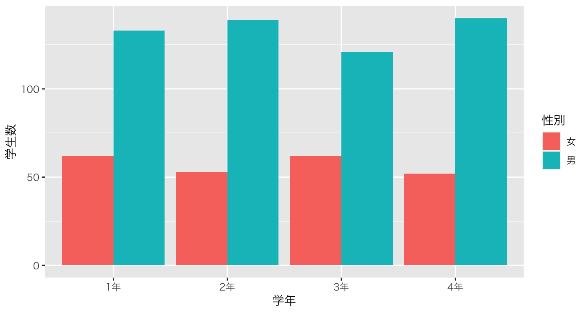

Chapter 8 ビジュアライゼーションの基本
8.1 Rにおける描画
データを可視化するビジュアリゼーションは、プレゼンテーションだけではなく分析者自身がデータを理解するためにも有効で重要なテクニック。
Rにはデフォルトの描画関数も用意されているが、tidyverseシリーズのggplot2というパッケージの関数が強力であり昨今はスタンダードになっていることから、こちらを紹介する。
ggplot2とは、グラフィックの文法 (grammar of graphics)という概念に基づいて作図するパッケージ
8.2 描画をしてみよう
Ch.2の武蔵大学経済学部の学生数のデータを作ってみよう。

8.3 復習：データ読み込み
# エクセルからデータを読み込み
data_634 <- readxl::read_excel("docs/r_basics/data/musashi_keizai_students_2023.xlsx")
# long型(tidy data)に変換
data_634_long <- data_634 |>
# long型に変換。1年〜４年の列(cols)を学生数という列にvalues_toでまとめる。各行に何年生かnames_toで記録する。
pivot_longer(cols=c("1年","2年","3年","4年"),names_to ="学年",values_to = "学生数")8.4 描画の前に
- データに少し工夫を加える
- データは文字列（カテゴリ）の順番を勝手に決めてしまう。
- 文字列をファクター型に変換する。
- 描画するときにカテゴリの順番を揃えたいので、順番の情報を与える。
8.5 キャンバスを用意する
- まずキャンバスを用意するイメージでggplot()関数を呼び出す
plot_634 <- ggplot()
print(plot_634)8.6 グラフのレイヤーを追加する
- グラフの種類ごとにデータを表現する幾何学的オブジェクト
geom_が用意されている geom_barは棒グラフで表現する。- 引数として、用いるデータ
data, x軸, y軸, 色などにデータを割り当てるmapping,そして、変数をどう扱うかというstatがある。mappingにはaesという関数を使ってデータを当てはめる。- x軸は学年、y軸は学生数とする。
statにはデータそのものの数値を使うため、"identity"を指定する。
plot_634 <- ggplot() +
geom_bar(data=data_634_long, mapping=aes(x=学年, y=学生数),stat="identity") # <- 追加！
print(plot_634)8.7 文字化けに対処する
- Macを使っていると、ggplotで日本語を使うと文字化けすることが知られている
- 豆腐化現象と呼ばれている
- 文字化けに対処するため、日本語のフォントを指定する。
- Windowsは多分不要。
- 新しく
theme_greyというレイヤーを作り、その中のbase_familyという引数でフォント名"HiraKakuPro-W3"を指定する。
plot_634 <- ggplot() +
geom_bar(data=data_634_long, mapping=aes(x=学年, y=学生数),stat="identity") +
theme_grey(base_family="HiraKakuPro-W3") # <- 追加！
print(plot_634)
8.8 aesに色を追加する
- 男女別に表示したいので、男女を色で分けたい
- マッピングでaesの中に色の変数として性別を指定する。
- 色のマッピングには二種類あり、点・線・枠の色を指定する
colorと、面の色を指定するfillがある。 - この場合は塗りつぶしたいので、
fillを指定する。 - 色は指定しなければ自動的に決められる。
plot_634 <- ggplot() +
geom_bar(data=data_634_long, mapping=aes(x=学年, y=学生数, fill=性別),stat="identity")+ # <- 追加！
theme_grey(base_family="HiraKakuPro-W3")
print(plot_634)8.9 男女の置き方を変えたい
- 男女を縦に積むのではなく、横に置くことで対比がしやすくなりそう。
- geom_bar()の引数の
positionをdodgeに指定する。- デフォルトは
stackになっている（文字通り「積む」）
- デフォルトは
8.10 aesに色を追加する
plot_634 <- ggplot() +
geom_bar(data=data_634_long, mapping=aes(x=学年, y=学生数, fill=性別), # <- 追加！
stat="identity", position="dodge")+
theme_grey(base_family="HiraKakuPro-W3")
print(plot_634)8.11 色を変えたい
- 色は指定しなければ自動的に決まる
- わかりやすい、おしゃれな色を使いたい場合はマニュアルで変えられる
scale_fill_manual()の中でvalueという色で変えることが可能。- 複数指定する場合は
c()の中に並べてベクトルとして扱う - 色の順番に注意
- 簡単な色の名前(例：
"blue","red")でも指定できるし、RGB値でも決められる- RGB値はネットで検索してみよう
- 複数指定する場合は
- ここでは、武蔵大学のロゴの緑と黄色を使う。
plot_634 <- ggplot() +
geom_bar(data=data_634_long, mapping=aes(x=学年, y=学生数, fill=性別), stat="identity", position="dodge")+
scale_fill_manual(values =c("#0A6648","#F6B21B")) + # <- 追加！
theme_grey(base_family="HiraKakuPro-W3")
print(plot_634)
8.12 学科別に分けたい
- 現状では、学科の人数がすべて積算されてしまっているが、データとしては分かれている
せっかくなので別で表示したいが、もうx軸もy軸も色も使ってしまっている。
- では、グラフ自体を分けてしまおう
facet_wrap()というレイヤーを使う~の後に分割に使うカテゴリを指定することで、分割した図を作ってくれる
plot_634 <- ggplot() +
geom_bar(data=data_634_long, mapping=aes(x=学年, y=学生数, fill=性別), stat="identity", position="dodge")+
scale_fill_manual(values =c("#0A6648","#F6B21B")) +
theme_grey(base_family="HiraKakuPro-W3") +
facet_wrap(~ 学科) # <- 追加！
print(plot_634)
8.13 ラベルを変更する・タイトルを追加する
- 通常はラベルを明示する
- lab()レイヤーの中で、X軸なら
x=, Y軸ならy=で変更する- 色の凡例のタイトルも
fill= - 今回は学年は明らか、学生数もタイトルで明示するので空欄とする
- 空欄としたい場合は
""
- 色の凡例のタイトルも
- タイトルを追加する場合は、
title=- サブタイトルも
subtitle=で追加できる
- サブタイトルも
- 右下のノートも
caption=で追加できる
8.14 ラベルを変更する・タイトルを追加する
plot_634 <- ggplot() +
geom_bar(data=data_634_long, mapping=aes(x=学年, y=学生数, fill=性別), stat="identity", position="dodge")+
scale_fill_manual(values =c("#0A6648","#F6B21B")) +
labs(fill="",x="",y="", # <- 追加!
title="武蔵大学経済学部の学科別・男女別学生数", # <- 追加!
subtitle="2023年5月1日時点", # <- 追加!
caption = "データ元：武蔵大学公式ウェブサイト") + # <- 追加!
theme_grey(base_family="HiraKakuPro-W3") +
facet_wrap(~ 学科) # <- 追加！8.15 テーマを変更する1
- テーマ (
theme)はggplotの細かい見た目を設定する- 背景、軸の有無、グリッドの数や濃さ、軸ラベルの字の大きさなどなど
- ggplotは背景がグレーのテーマがデフォルト
themeレイヤーで細かい設定を行うtheme_***でデフォルトテーマを使うこともできる- ここでどんなテーマがあるか見られる
- ここではは見た目をスッキリさせるデフォルトテーマ
theme_minimalを使ってみる
plot_634 <- ggplot() +
geom_bar(data=data_634_long, mapping=aes(x=学年, y=学生数, fill=性別), stat="identity", position="dodge")+
scale_fill_manual(values =c("#0A6648","#F6B21B")) +
labs(fill="",x="",y="",
title="武蔵大学経済学部の学科別・男女別学生数",
subtitle="2023年5月1日時点",
caption = "データ元：武蔵大学公式ウェブサイト") +
theme_minimal(base_family="HiraKakuPro-W3") + # <- 変更!
facet_wrap(~ 学科) ## <- 追加！8.16 テーマを変更する2
- 細かいテーマ設定を
themeレイヤーの中で行うpanel.grid.major.xはメインのグリッドの設定- element_blank()は、「空」にするという設定
legend.positionで、凡例を右ではなく下"bottom"にtextで図の中の文字を設定element_text()で設定するsize=15としてフォントサイズを15にする。
plot_634 <- ggplot() +
geom_bar(data=data_634_long, mapping=aes(x=学年, y=学生数, fill=性別), stat="identity", position="dodge")+
scale_fill_manual(values =c("#0A6648","#F6B21B")) +
labs(fill="",x="",y="",
title="武蔵大学経済学部の学科別・男女別学生数",
subtitle="2023年5月1日時点",
caption = "データ元：武蔵大学公式ウェブサイト") +
theme_minimal(base_family="HiraKakuPro-W3") +
theme(panel.grid.major.x = element_blank(), # <- 追加!
legend.position = "bottom", # <- 追加!
text = element_text(size=15)) + # <- 追加!
facet_wrap(~ 学科) 8.17 完成形

8.18 ggplot2による図の保存
- ggplotで作図した結果をオブジェクトに保存
- ここの例では
plot_634に保存
- ここの例では
ggsaveという関数で、ファイルパスを指定して保存
# ggsave()関数を使って、図を保存
# file: 保存する場所, plot: 図のオブジェクト, device: 保存する形式
ggsave(file="docs/r_basics/fig/musashi_students_2023.png", plot=plot_634, device="png")8.19 他の描画レイヤー
|geom_point|散布図|
|geom_line|折れ線グラフ|
|geom_boxplot|箱ひげ図|
|geom_violin|バイオリンプロット|
|geom_map|地図を描く|
- 他にも多くの描画レイヤーが存在する
- 参考
8.20 散布図
geom_pointで散布図を描く- XとYの変数を指定する
- ここでは
diamondsというggplotに付属しているデータセットを使う - ダイアモンドのカラットをx軸, 価格をy軸, ダイアモンドの色を色で表現
plot_scatter <- ggplot(data=diamonds) +
geom_point(aes(x=carat,y=price,
color=color))8.21 折れ線グラフ
geom_lineで折れ線グラフを描く -時系列データに有効- XとYの変数を指定する
- ここでは
economicsというggplotに付属しているデータセットを使う - 日付をx軸, アメリカの失業数をy軸
plot_line <- ggplot(data=economics) +
geom_line(aes(x=date,y=unemploy))
8.22 箱ひげ図
geom_boxplotで箱ひげ図を描く- 変数の分布を確認するのに有効
- XとYの変数を指定する
- ここでは
mpgというggplotに付属しているデータセットを使う - 車の種類をx軸, 各自動車の燃費をy軸
]
plot_boxplot <- ggplot(data=mpg) +
geom_boxplot(aes(x=class,y=hwy))
8.23 ヴァイオリンプロット
geom_violinでヴァイオリンプロットを描く- 変数の分布を確認するのに有効
- XとYの変数を指定する
- ここでは
mpgというggplotに付属しているデータセットを使う - 車の種類をx軸, 各自動車の燃費をy軸
plot_violin <- ggplot(data=mpg) +
geom_violin(aes(x=class,y=hwy))8.24 適した描画？
分析の目的やデータのタイプによって、用いたいグラフは異なる。どのような目的でデータ描画を行うのか考えてから描画に取りかかろう。

Figure 8.1: データタイプ別のグラフ
- 棒グラフ：データの大きさを比較する
- 折れ線グラフ：時系列での変化をみる
- 円グラフ：全体に占める割合をみる
- 積み上げ棒グラフ：累積データから内訳を比較する
- 散布図：2つのデータの相関関係をみる
例：グラフの種類と使い分け、間違った使い方(Tableau)